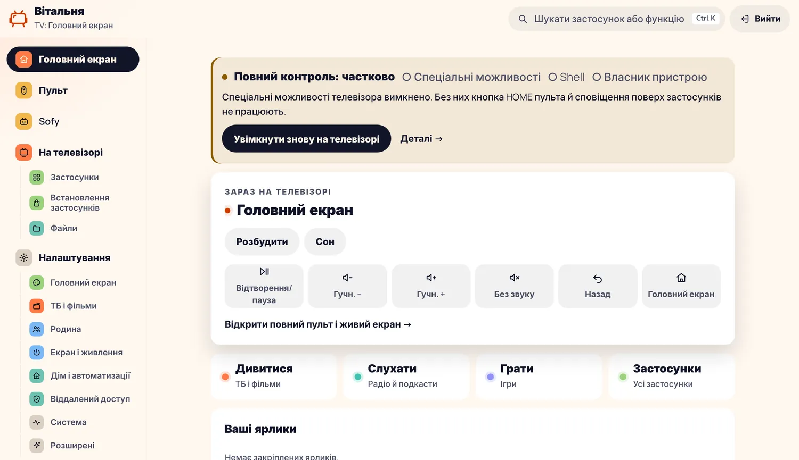
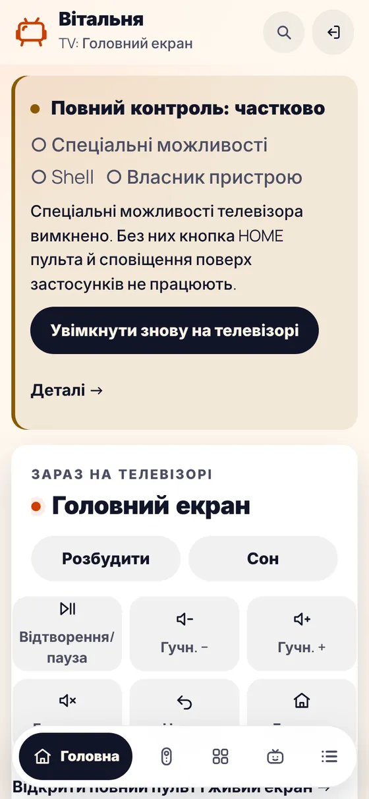

Затишний час біля вашого телевізора. Усе на своїх місцях, як в охайній вітальні.
Для тих, хто просто хоче лягти на диван і дивитися телевізор. Sofaly змінює головний екран, а не ваш телевізор: Google нікуди не дівається, реклами немає, а кожна річ має своє місце.
П'ять рядів, усе на виду
Продовжити, Дивитися, Слухати, Грати й Застосунки. Два кліки до будь-чого.
Жодної реклами
Навіть у безкоштовному плані — жодної спонсорованої добірки. Жодного стеження, що виходить із вашого дому.
Швидкий на простому телевізорі
Виміряно на 32-бітному Chromecast: анімація підлаштовується під можливості пристрою.
Створено для всього дому
І для бабусь із дідусями
Великий текст, простий режим, що вимовляє назву застосунку, високий контраст і програма зчитування з екрана. 27 мовами.
Прокидається разом із вами
Будильник сам вмикає телевізор, плавно додає гучність і відкриває «Доброго ранку»: час, погоду й розклад.
Доглядає дім
Світло, сцени й дверний дзвінок Home Assistant на телевізорі. Засинає, коли всі пішли.
Спілкується з вашим телефоном
Керуйте, пишіть і надсилайте повідомлення з будь-якого телефона чи комп'ютера вдома, під захистом PIN.
Точна погода
Поточна погода надходить із найближчого аеропорту: виміряна, а не вгадана. Прогноз на 9 днів одним натисканням OK.
Сам про себе дбає
Замкнена резервна копія щоночі, обслуговування, поки ви спите, і діагностика, що пояснює, що пішло не так.
Ваш телевізор — також на телефоні й комп'ютері.
Відкрийте браузер у тій самій мережі, введіть PIN — і готово: пульт, набір тексту, живий екран телевізора, повідомлення й налаштування. Нічого встановлювати й без облікового запису.


- Панель на телефоні й комп'ютеріПульт, набір тексту з будь-якими літерами, живий вигляд екрана телевізора, фото для заставки, дошка й резервні копії — з браузера будь-якого пристрою вдома.
- Запитайте телевізорНапишіть або скажіть «відкрий YouTube», «нагадай через 7 хвилин», «вимкнися через 30 хвилин» — і телевізор це зробить.
- Діліться з телефонаУстановлена як застосунок, панель з'являється в меню «Поділитися»: відео з YouTube відкривається на телевізорі, посилання відкривається на телевізорі, а текст стає повідомленням.
- Ярлик у WindowsТелевізор з'являється в розділі «Мережа» Провідника з ярликом, що відкриває панель, навіть якщо його IP зміниться.
- Телевізор як мережевий дискКопіюйте файли на телевізор перетягуванням: у Windows він з'являється в «Цей ПК», як телефон; на Mac, Linux і телефонах — через захищений WebDAV.
- Кілька домівДоглядайте за телевізором у себе й у батьків з одного телефона.
Справжні екрани панелі з демонстраційними даними.
120 нових речей, які вміє ваш телевізор. Упорядковано у 12 світів — так само, як ряди впорядковують екран.
- Головний екранОхайний екран, зрозумілий кожному, упорядкований так, як вам подобається.19
- ДивитисяВаші фільми, ваші серіали й плеєр рівня домашнього кінотеатру.14
- СлухатиРадіо й подкасти з тією ж турботою, що й відео.5
- ГратиУсі ваші ігри в одному місці, готові до контролера.6
- ЗастосункиВаші застосунки в розумному порядку.3
- ДімБудильник, таймери, автоматизації й розумний дім.13
- Погода й заставкаТочна погода й заставка, яку варто лишати ввімкненою.13
- РодинаПрофіль для кожного, турбота про дітей і теплий прийом для гостей.12
- Телефон і комп'ютерТелевізор спілкується з пристроями вдома.11
- Сам про себе дбаєРезервні копії, обслуговування й діагностика — вам не треба про це пам'ятати.13
- Для всіхДля людей, які бачать, чують або користуються пультом по-різному.5
- КонфіденційністьБез реклами, без стеження й PIN там, де це важливо.6
Головний екран
Охайний екран, зрозумілий кожному, упорядкований так, як вам подобається.

Ряди
Продовжити, Дивитися, Слухати, Грати й Застосунки — кожен у своєму ряду, один під одним. Усе на виду, великим текстом.
Продовжити
Одне місце, щоб повернутися до того, що ви робили: епізод, станція, подкаст або останній застосунок.
Верхня панель
Пошук, голос, погода в один рядок і годинник — завжди на тому самому місці. Вона ховається, поки ви гортаєте, щоб екран дихав.
Ряди
Продовжити, Дивитися, Слухати, Грати й Застосунки — кожен у своєму ряду, один під одним. Усе на виду, великим текстом.
Де: Це головний екран: він з'являється після натискання HOME.Продовжити
Одне місце, щоб повернутися до того, що ви робили: епізод, станція, подкаст або останній застосунок.
Де: Один із рядів головного екрана.Верхня панель
Пошук, голос, погода в один рядок і годинник — завжди на тому самому місці. Вона ховається, поки ви гортаєте, щоб екран дихав.
Де: Підніміться до неї кнопкою ▲.Google працює й далі
Google Асистент, Gemini, пошук і ваш обліковий запис Google працюють як раніше. Sofaly змінює головний екран, а не ваш телевізор.
Де: Користуйтеся кнопкою мікрофона як завжди.Швидка панель
Wi-Fi, Bluetooth, таймер сну, аудіовихід, будильник, профілі, сповіщення й список покупок — із будь-якого застосунку.
Де: Утримуйте BACK.Ваш пульт — ваші правила
HOME завжди повертає в Sofaly. Утримання BACK відкриває швидку панель, утримання HOME — Дім, а утримання OK на застосунку — його меню.
Де: Тест кнопок показує кожну кнопку, яку отримує телевізор.Зараз грає
Пігулка вгорі з обкладинкою й назвою того, що грає. OK ставить на паузу чи продовжує, утримання OK відкриває застосунок.
Де: Увімкніть у Головний екран › Більше параметрів.Теми й тло
Темна — з зображенням того, що у фокусі. Галерея — щодня картина з The Met. Небо — із супутником і мапою. Або власне тло: фото чи відео. Працюють і плагіни тла, як-от аерозйомка Overflight.
Де: Темна, Галерея й Небо в Basic; інші — у Pro.Значки до смакуPro
Використовуйте пакет значків із Play або змініть значок окремого застосунку, по одному.
Де: Утримуйте OK на застосунку › Змінити значок.Анімації під ваш телевізор
Потужні телевізори анімують усе; простіші — лише вибране й самі сповільнюються, коли просідають кадри.
Де: Налаштування › Вигляд.Фаза місяцяPro
Сьогоднішній місяць і яка його частина освітлена — обчислено на самому телевізорі, без інтернету.
Де: У прогнозі, на заставці й на значку погоди вночі. Налаштування › Вигляд.Зворотний відлікPro
Скільки днів лишилося до вибраної дати або до найближчого свята.
Де: У пігулці вгорі екрана. Налаштування › Вигляд.Домашнє нагадуванняPro
Нотатка, що повертається у вибрані дні тижня: день вивезення сміття, ліки, заняття.
Де: У пігулці вгорі екрана. Налаштування › Вигляд.Стан вашого сервісуPro
Телевізор перевіряє вказану вами адресу й показує, чи вона працює: домашній сервер, сайт магазину.
Де: У пігулці вгорі екрана. Налаштування › Вигляд.Курси на сьогодніPro
Валюти, біткоїн та ефір за сьогоднішнім курсом, з відкритих офіційних джерел.
Де: Біля погоди, на верхній панелі. Налаштування › Вигляд.Наступний матч вашої командиPro
Коли й з ким наступного разу грає ваша команда — на картці на головному екрані.
Де: На головному екрані. Налаштування › Вигляд.Картки з інших застосунківPro
Окрім власних карток Sofaly, застосунки-партнери додають свої на головний екран: замовлення в дорозі, автобус, оголошення від будинку.
Де: Картки показуються наприкінці «Дивитися».Острів угорі екрана
Сповіщення змінюють одне одного в пігулці вгорі: немає інтернету, нагадування, розклад і будильник. Важливе збільшується на 5 секунд із «▲, щоб відкрити», дзвінок у двері з Дому з'являється одразу, а коли ви вмикаєте телевізор, показується підсумок того, що сталося.
Де: Головний екран, угорі.Слушна порада в слушний час
Без штучного інтелекту: за тижневим використанням телевізор пропонує те, що має сенс саме в цю годину.
Де: Головний екран.
Дивитися
Ваші фільми, ваші серіали й плеєр рівня домашнього кінотеатру.
З комп'ютера
Відео, музика й фото з Plex, Jellyfin, Emby, папок ПК чи NAS (SMB, WebDAV, FTP, SFTP, NFS), OneDrive, Dropbox, Box, Google Drive, UPnP і USB-накопичувачів.
Плеєр, що відтворює все
Звук Dolby (AC3, E-AC3), DTS і TrueHD, а також субтитри Blu-ray, DVD й аніме — без установлення Kodi чи VLC.
Продовжує з місця зупинки
Фільми й епізоди повертаються в потрібне місце. Наступний епізод починається через 10 секунд, а після 3 поспіль телевізор питає, чи ви ще дивитеся.
З комп'ютера
Відео, музика й фото з Plex, Jellyfin, Emby, папок ПК чи NAS (SMB, WebDAV, FTP, SFTP, NFS), OneDrive, Dropbox, Box, Google Drive, UPnP і USB-накопичувачів.
Де: Увімкнені сервери й USB-накопичувачі з'являються самі; решту додають через «Додати».Плеєр, що відтворює все
Звук Dolby (AC3, E-AC3), DTS і TrueHD, а також субтитри Blu-ray, DVD й аніме — без установлення Kodi чи VLC.
Де: Під час відео натисніть ▼, щоб вибрати аудіо, субтитри та їхній розмір.Продовжує з місця зупинки
Фільми й епізоди повертаються в потрібне місце. Наступний епізод починається через 10 секунд, а після 3 поспіль телевізор питає, чи ви ще дивитеся.
Де: Працює само.Пропуск вступу
Коли вступ серіалу відомий, з'являється «Пропустити вступ · OK». Можна й один раз позначити вступ — телевізор запам'ятає.
Де: Увімкнено з коробки.Бажані аудіо й субтитри
Оригінал із субтитрами або дубляж — вибирається один раз і запам'ятовується для кожної назви. Субтитри з інтернету, коли у файлі їх немає.
Де: ТБ і фільми › Аудіо й субтитри.Фільми без смикання
Під час фільму телевізор перемикається на 24 Гц, щоб панорами камери лишалися плавними.
Де: Вмикається разом із фільмом; екран на секунду блимає чорним.Краще бачити й чути
Субтитри на чорній підкладці або жовті, «Чіткіший голос», що виділяє мовлення, і «Рівна гучність», що приборкує гучні фільми й підсилює тихі.
Де: У меню ▼ плеєра.Автоматичні субтитриUltra
Коли немає субтитрів вашою мовою, телевізор перекладає наявні.
Де: Виберіть у меню субтитрів плеєра.Повні сторінки фільмівUltra
Постер, рейтинг, акторський склад, трейлер, вікове обмеження й колекція фільму на гарній сторінці великим текстом. З «Хто цей актор?»: фото, персонаж та інші роботи.
Де: OK на фільмі чи серіалі.Ваші списки Trakt і SimklPro
Що ви хочете подивитися і що вже бачили — синхронізовано з вашим обліковим записом та іншими пристроями.
Де: Увійдіть через QR у ТБ і фільми › Сервіси.Один пошук для всього
Знаходить фільми, серіали, станції й застосунки одразу й переносить той самий пошук у YouTube, Netflix чи Prime Video.
Де: На верхній панелі або голосом.Двоє субтитрів одночасно
Наприклад, ваша мова внизу, а оригінал угорі — щоб учитися чи дивитися разом.
Де: Меню ▼ плеєра › Субтитри.Гучніші діалоги
Коли звук 5.1 стає стерео, мовлення лишається попереду, а вибухи не заглушують голоси.
Де: Меню ▼ плеєра.Без спойлерів і друга мова
Опис епізоду, який ви ще не бачили, приховано. Немає аудіо чи субтитрів вашою мовою? Вмикається друга, яку ви вибрали.
Де: ТБ і фільми › Аудіо й субтитри.
Слухати
Радіо й подкасти з тією ж турботою, що й відео.

Радіо з усього світу
Тисячі відкритих радіостанцій за назвою, країною чи жанром, з вашими обраними й останніми прослуханими.
Подкасти
Підписуйтеся за назвою, слухайте на телевізорі й продовжуйте епізод з місця зупинки.
Відкривайте подкасти
Шукайте у всьому відкритому каталозі подкастів і дивіться, що популярне у вашій країні.
Радіо з усього світу
Тисячі відкритих радіостанцій за назвою, країною чи жанром, з вашими обраними й останніми прослуханими.
Де: Слухати › Радіо.Подкасти
Підписуйтеся за назвою, слухайте на телевізорі й продовжуйте епізод з місця зупинки.
Де: Слухати › Подкасти.Відкривайте подкастиPro
Шукайте у всьому відкритому каталозі подкастів і дивіться, що популярне у вашій країні.
Де: Слухати › Подкасти › Пошук.Повноекранний плеєр
Велика обкладинка, розділи, швидкість і таймер сну, що ставить паузу наприкінці епізоду.
Де: Слухати › Зараз грає › Відкрити плеєр.Звук у ваших навушникахPro
Звук фільму йде в навушники вашого телефона синхронно — дивіться вночі, нікого не будячи.
Де: Меню ▼ плеєра › Звук на телефоні.
Грати
Усі ваші ігри в одному місці, готові до контролера.

Усі ваші ігри в одному місці
GeForce NOW, Steam Link, Moonlight, PS Remote Play, RetroArch та ігри телевізора залишають ряд застосунків і живуть у «Грати», згруповані в Хмара, З ПК, Ретро й На ТВ.
Грайте на ПК нагорі
Телевізор будить комп'ютер через мережу, чекає на відповідь і відкриває Moonlight або Steam Link. Пробудження ПК через мережу працює й поза «Грати» — з ярлика на головному екрані.
Перевірка мережі
Підкаже, чи впорається ваш інтернет із хмарними іграми, і попередить, перш ніж відкрити хмарну гру в слабкій мережі.
Усі ваші ігри в одному місці
GeForce NOW, Steam Link, Moonlight, PS Remote Play, RetroArch та ігри телевізора залишають ряд застосунків і живуть у «Грати», згруповані в Хмара, З ПК, Ретро й На ТВ.
Де: Утримуйте OK на грі, щоб змінити її групу.Грайте на ПК нагорі
Телевізор будить комп'ютер через мережу, чекає на відповідь і відкриває Moonlight або Steam Link. Пробудження ПК через мережу працює й поза «Грати» — з ярлика на головному екрані.
Де: Один раз збережіть комп'ютер у вебпанелі.Перевірка мережі
Підкаже, чи впорається ваш інтернет із хмарними іграми, і попередить, перш ніж відкрити хмарну гру в слабкій мережі.
Де: Грати › Перевірити мережу.Ігрові контролери
Сполучайте контролер, не шукаючи по меню, бачте підключені вгорі й, за бажанням, зробіть так, щоб підключений контролер відкривав «Грати».
Де: Грати › Сполучити контролер.Ігровий режим
Поки гра відкрита, заставка, нічний фільтр і сповіщення чекають кінця матчу.
Де: Вмикається сам.Ваша компанія в Discord
Дивіться, хто з вашого сервера Discord онлайн і в якій грі, і кличте компанію просто з телевізора.
Де: Увімкніть віджет сервера й вставте його номер.
Застосунки
Ваші застосунки в розумному порядку.
Обрані — попереду
«Застосунки» показують 8 застосунків, які ви відкриваєте найчастіше, а «Усі застосунки» — решту сіткою.
По-вашому
Переміщуйте, групуйте або приховуйте будь-який застосунок. Заводські застосунки, якими ви не користуєтеся, відходять убік.
Вільні кнопки Netflix і YouTube
Кнопки застосунків на пульті відкривають будь-який застосунок, який ви захочете. Натисніть, щоб відкрити, утримуйте 3 секунди, щоб змінити.
Обрані — попереду
«Застосунки» показують 8 застосунків, які ви відкриваєте найчастіше, а «Усі застосунки» — решту сіткою.
Де: У ряду «Застосунки».По-вашому
Переміщуйте, групуйте або приховуйте будь-який застосунок. Заводські застосунки, якими ви не користуєтеся, відходять убік.
Де: Утримуйте OK на застосунку.Вільні кнопки Netflix і YouTube
Кнопки застосунків на пульті відкривають будь-який застосунок, який ви захочете. Натисніть, щоб відкрити, утримуйте 3 секунди, щоб змінити.
Де: Працює з оригінальним пультом.
Дім
Будильник, таймери, автоматизації й розумний дім.

Будильник, що вмикає телевізор
У призначений час телевізор вмикається сам, гучність плавно зростає, і є відкладення. У кожного будильника є назва, дні, звук і гучність — навіть застосунок чи остання станція.
Таймери й пісочний годинник
До 3 іменованих таймерів зі сповіщенням на екрані й секундомір.
М'яке вимкнення
Таймер сну приглушує екран і знижує гучність в останні 5 хвилин, щоб ніхто не прокинувся від вимкнення.
Будильник, що вмикає телевізор
У призначений час телевізор вмикається сам, гучність плавно зростає, і є відкладення. У кожного будильника є назва, дні, звук і гучність — навіть застосунок чи остання станція.
Де: Утримуйте BACK › Будильник.Таймери й пісочний годинник
До 3 іменованих таймерів зі сповіщенням на екрані й секундомір.
Де: «Hey Google, відкрий Нагадай через 10 хвилин».М'яке вимкнення
Таймер сну приглушує екран і знижує гучність в останні 5 хвилин, щоб ніхто не прокинувся від вимкнення.
Де: Плитка таймера на швидкій панелі.Вимикається, якщо ніхто не дивиться
Через вибраний час без натискань телевізор великим текстом питає, чи ви ще дивитеся, а потім засинає.
Де: Екран і живлення › Вимикати без використання.Готові рецепти
Сон, Серіал і Матч налаштовують телевізор одним махом (звук, екран і сповіщення). Одне OK застосовує, друге скасовує.
Де: Швидка панель.АвтоматизаціїPro
У визначений час, після натискання кнопки або коли щось стається (фільм на паузі, усі пішли, наближається дощ): телевізор відкриває застосунок, запускає сцену або вимикається.
Де: Дім і автоматизації › Автоматизації.Home Assistant на телевізоріPro
Світло, розетки, вентилятори, штори, кондиціонер і сцени — просто з дивана. Він спілкується з вашим сервером у вашій мережі, без хмари посередині.
Де: Утримуйте HOME.Хто біля дверейPro
Коли дзвонять у двері, знімок із камери з'являється поверх того, що ви дивитеся.
Де: З Home Assistant.Засинає, коли всі йдуть
З роутером UniFi телевізор помічає, що телефони домашніх пішли, і засинає.
Де: Екран і живлення › Більше параметрів.Голосові ярлики
«Hey Google, відкрий Прогноз погоди» читає прогноз уголос. Фільми, Мій дім, Дошка, таймери й вимкнення відкриваються так само.
Де: Скористайтеся кнопкою мікрофона.Вмикається разом із телевізором
Увімкнули телевізор його власним пультом? Пристрій теж прокидається, без чорного екрана. А ще гучність LG через мережу; коли пристрій засинає, LG вимикається разом із ним.
Де: Вмикається сам.Не турбувати
У вибрані години сповіщення й звуки чекають.
Де: Дім і автоматизації.«Лише якщо» і свята
Автоматизації, що спрацьовують лише в робочі дні, коли хтось удома чи коли йде дощ, — з урахуванням свят вашої країни.
Де: Дім і автоматизації › Автоматизації.
Погода й заставка
Точна погода й заставка, яку варто лишати ввімкненою.
Сьогоднішня погода, виміряна
Температура береться зі зведення найближчого аеропорту, а значок дня/ночі відповідає сходу й заходу сонця там, де стоїть телевізор.
Дощ за трьома моделями
Імовірність дощу — це медіана трьох погодних моделей (ECMWF, ICON і GFS), яка помиляється рідше, ніж будь-яка з них.
Повноекранний прогноз
Найближчі 24 години, графік дощу, 9 днів, якість повітря, сонце й місяць.
Сьогоднішня погода, виміряна
Температура береться зі зведення найближчого аеропорту, а значок дня/ночі відповідає сходу й заходу сонця там, де стоїть телевізор.
Де: Угорі головного екрана.Дощ за трьома моделямиUltra
Імовірність дощу — це медіана трьох погодних моделей (ECMWF, ICON і GFS), яка помиляється рідше, ніж будь-яка з них.
Де: З'являється в прогнозі сама.Повноекранний прогноз
Найближчі 24 години, графік дощу, 9 днів, якість повітря, сонце й місяць.
Де: OK на погоді.Попередження про дощ
Сповіщення поверх вашого застосунку, коли от-от почнеться дощ. Час зняти білизну.
Де: Головний екран › Погода.Заставка, яку варто лишати ввімкненою
Привітання, великий годинник, дата, погода й картки зі сповіщеннями, наступним будильником і повідомленнями. У темі Галерея картина дня повільно рухається, щоб ніщо не вигоряло.
Де: Екран і живлення › Заставка.Ваші фото на заставці
Надсилайте фото з телефона або виберіть мережеву папку. Вони лишаються в папці, яку бачить лише телевізор.
Де: QR відкриває панель на потрібній сторінці.Доброго ранку
Коли ви вимикаєте будильник: привітання, час, прогноз і розклад на сьогодні, а телевізор може прочитати це вголос.
Де: «Hey Google, відкрий Доброго ранку».Google Календар
Сьогоднішні події й дні народження на телевізорі — з одного облікового запису чи з усіх разом.
Де: OK на даті вгорі.Нічний фільтр
Уночі екран стає теплішим і м'якшим для очей.
Де: Екран і живлення › Більше параметрів.Підсумок тижня
У неділю ввечері — картка з екранним часом за застосунками, використаним інтернетом і обривами мережі.
Де: Екран і живлення › Більше параметрів.Попередження про сильну спеку чи холод
Те саме попередження, що й про дощ, поверх будь-якого екрана, коли насувається сильна спека чи холод.
Де: Головний екран › Погода.Нічне небо
Космічна станція, метеорні потоки, супермісяці й затемнення. Повідомляє лише тоді, коли їх видно з дому за ясного неба.
Де: Заставка.Рік вашого телевізора
У грудні — підсумок року: що найбільше дивилися, слухали й грали на вашому телевізорі. Лишається лише на телевізорі.
Де: З'являється в грудні.
Родина
Профіль для кожного, турбота про дітей і теплий прийом для гостей.

Профіль для кожного
Кожен обліковий запис Google на телевізорі має власні обрані, що продовжити й порядок застосунків.
Дитячий профіль
Позначте профіль як дитячий: дитячий режим і час сну вмикаються самі, а для виходу потрібен PIN батьків.
Час сну
У вибрані години відкриваються лише дозволені застосунки, а гучність має межу.
Профіль для кожного
Кожен обліковий запис Google на телевізорі має власні обрані, що продовжити й порядок застосунків.
Де: Утримуйте BACK › Профілі.Дитячий профіль
Позначте профіль як дитячий: дитячий режим і час сну вмикаються самі, а для виходу потрібен PIN батьків.
Де: Швидка панель › Профілі.Час сну
У вибрані години відкриваються лише дозволені застосунки, а гучність має межу.
Де: Родина › Більше параметрів.Щоденний екранний час
Щоденне обмеження телевізора для того, кого ви виберете.
Де: Родина › Більше параметрів.Гостьовий режим
Приховує ваш профіль, ваш календар і вибрані застосунки, поки у вас гості.
Де: Плитка «Гість» на швидкій панелі.Wi-Fi для гостей
Введіть пароль один раз; гості сканують QR на телевізорі — і вони в мережі.
Де: Родина › Wi-Fi для гостей.Сімейна дошка
Список покупок, закріплені нотатки й сьогоднішні дні народження — на швидкій панелі й на заставці.
Де: Редагуйте з телефона; OK позначає пункт виконаним.Повідомлення здалекуPro
Рідні, які живуть далеко, надсилають повідомлення й фото на домашній телевізор звідусіль.
Де: Запрошення за посиланням.ВідеоповідомленняPro
Коротке відео від рідних з'являється на телевізорі з ім'ям відправника.
Де: З панелі на телефоні.Вікові рейтинги
У дитячому режимі фільми й серіали за відповідним віком — на додачу до категорій.
Де: Родина.Режим господаря
Для оренди: гості користуються телевізором, а ваші речі лишаються прибраними й повертаються наприкінці перебування.
Де: Родина › Більше параметрів.Турбота здалеку
Той, хто живе сам, просить допомоги, утримуючи кнопку, і телефон того, хто доглядає, отримує сповіщення. Вмикається лише за згоди мешканця, наданої на самому телевізорі.
Де: Родина › Турбота здалеку.
Телефон і комп'ютер
Телевізор спілкується з пристроями вдома.

Панель на телефоні й комп'ютері
Пульт, набір тексту з будь-якими літерами, живий вигляд екрана телевізора, фото для заставки, дошка й резервні копії — з браузера будь-якого пристрою вдома.
Запитайте телевізор
Напишіть або скажіть «відкрий YouTube», «нагадай через 7 хвилин», «вимкнися через 30 хвилин» — і телевізор це зробить.
Діліться з телефона
Установлена як застосунок, панель з'являється в меню «Поділитися»: відео з YouTube відкривається на телевізорі, посилання відкривається на телевізорі, а текст стає повідомленням.
Панель на телефоні й комп'ютері
Пульт, набір тексту з будь-якими літерами, живий вигляд екрана телевізора, фото для заставки, дошка й резервні копії — з браузера будь-якого пристрою вдома.
Де: Віддалений доступ › Вхід із телефона (QR).Запитайте телевізорPro
Напишіть або скажіть «відкрий YouTube», «нагадай через 7 хвилин», «вимкнися через 30 хвилин» — і телевізор це зробить.
Де: У панелі на телефоні.Діліться з телефонаPro
Установлена як застосунок, панель з'являється в меню «Поділитися»: відео з YouTube відкривається на телевізорі, посилання відкривається на телевізорі, а текст стає повідомленням.
Де: Поділитися › Sofaly.Телевізор як мережевий дискPro
Копіюйте файли на телевізор перетягуванням: у Windows він з'являється в «Цей ПК», як телефон; на Mac, Linux і телефонах — через захищений WebDAV.
Де: Віддалений доступ › Показувати як мережевий диск.Ярлик у WindowsPro
Телевізор з'являється в розділі «Мережа» Провідника з ярликом, що відкриває панель, навіть якщо його IP зміниться.
Де: Увімкнено, коли ввімкнено панель.Продовжити на іншому телевізоріPro
Зупинилися у вітальні? Надішліть у спальню: інший телевізор покаже «Продовжити з місця зупинки?» і відкриється на тому самому місці.
Де: Меню плеєра › Надіслати на інший телевізор.Дивитися разомUltra
Два доми дивляться одне й те саме водночас: пауза тут — пауза там, з реакціями в куточку.
Де: Запрошення між телевізорами родини.Кілька домівUltra
Доглядайте за телевізором у себе й у батьків з одного телефона.
Де: Із застосунку для телефона.Говоріть із телевізором через Claude
Спілкуйтеся з телевізором через Claude: він розповідає, що зараз іде, відкриває застосунки й налаштовує різне. QR-код на екрані, без ключа й пароля.
Де: Віддалений доступ › Claude через інтернет.Клавіатура телефона
На телевізорі відкрилося текстове поле? Клавіатура з'являється на вашому телефоні.
Де: Вмикається сам разом із панеллю.Сповіщення на телефоні
Будильник, дзвінок у двері й повідомлення надходять на телефон без сервера посередині.
Де: Панель › Сповіщення на телефоні.
Сам про себе дбає
Резервні копії, обслуговування й діагностика — вам не треба про це пам'ятати.

Новий телевізор за 2 хвилини
Купили інший телевізор? Відскануйте QR-код — і все перейде на нього, зашифрованим.
Замкнена резервна копія щоночі
Поки телевізор не використовується — повна резервна копія, замкнена вашим паролем. Зберігаються останні 7, і щоночі телевізор перевіряє, що вона відновиться.
Копія в хмарі
Копії також надходять у ваш Google Drive, OneDrive, Dropbox, Box, NAS або на USB-накопичувач. Замкнені: навіть хмара не може їх прочитати.
Новий телевізор за 2 хвилини
Купили інший телевізор? Відскануйте QR-код — і все перейде на нього, зашифрованим.
Де: Система › Резервна копія › Перенести на новий телевізор.Замкнена резервна копія щоночі
Поки телевізор не використовується — повна резервна копія, замкнена вашим паролем. Зберігаються останні 7, і щоночі телевізор перевіряє, що вона відновиться.
Де: Система › Автоматична резервна копія.Копія в хмаріPro
Копії також надходять у ваш Google Drive, OneDrive, Dropbox, Box, NAS або на USB-накопичувач. Замкнені: навіть хмара не може їх прочитати.
Де: Система › Автоматична резервна копія.Нічне обслуговування
Прибирає залишки, виправляє дозволи й переплановує будильники, поки ви спите.
Де: Працює саме.Діагностика телевізора
Інтернет, DNS і чому застосунок зупинився — усе одразу й зрозумілими реченнями.
Де: «Hey Google, відкрий Діагностику телевізора».Тест швидкості інтернету
Вимірює ваш інтернет одним дотиком і показує сигнал Wi-Fi, затримку й швидкість простими словами.
Де: Налаштування › Розширені › Мережа.Як почувається цей телевізор
Телевізор сам вимірює свої показники (час відкриття, збої, вчасні будильники) й показує їх на одному екрані. Ніщо не залишає ваш дім.
Де: Система › Як почувається цей телевізор.Безпечний режим
Якщо нова версія поводиться дивно одразу після встановлення, телевізор переходить у безпечний режим і показує, як вийти.
Де: З'являється лише за потреби.Що змінилося
Кожна версія пояснює, що змінилося, і приносить короткий список того, що перевірити пультом.
Де: Система › Що змінилося.Повідомити про проблему
Розкажіть, що сталося, пультом або з телефона; телевізор збирає потрібне, нічого особистого.
Де: Система › Повідомити про проблему.Wi-Fi, що повертається сам
Якщо Wi-Fi не повертається після збою, телевізор перепідключається сам.
Де: Вмикається сам.Без інтернету, без паніки
Головний екран одним рядком каже, що й далі працює, поки інтернет не повернувся.
Де: З'являється лише за потреби.Прибирання заводських застосунків
Прибирає з дороги застосунки, що прийшли з телевізором і якими ви не користуєтеся, з можливістю скасувати, і показує виміряне «до» і «після».
Де: Система › Очищення.
Для всіх
Для людей, які бачать, чують або користуються пультом по-різному.

27 мов
Португальська, англійська, іспанська, французька, німецька, італійська, російська, польська, турецька, японська, китайська, корейська, гінді, індонезійська й арабська, з екранами справа наліво. А також нідерландська, шведська, данська, норвезька, фінська, чеська, грецька, угорська, румунська, українська, в'єтнамська й тайська. Відповідає мові телевізора.
Розмір тексту
Звичайний, Великий або Більший — на кожному екрані, перевірено, щоб текст ніколи не обрізався й не накладався.
Простий режим
Великі картки, менше всього на екрані й назва застосунку вголос. Для тих, кому пульт дається важко.
27 мов
Португальська, англійська, іспанська, французька, німецька, італійська, російська, польська, турецька, японська, китайська, корейська, гінді, індонезійська й арабська, з екранами справа наліво. А також нідерландська, шведська, данська, норвезька, фінська, чеська, грецька, угорська, румунська, українська, в'єтнамська й тайська. Відповідає мові телевізора.
Де: Змінюється разом із телевізором.Розмір тексту
Звичайний, Великий або Більший — на кожному екрані, перевірено, щоб текст ніколи не обрізався й не накладався.
Де: Головний екран › Розмір тексту.Простий режим
Великі картки, менше всього на екрані й назва застосунку вголос. Для тих, кому пульт дається важко.
Де: Головний екран › Більше параметрів.Читання вголос
Телевізор промовляє те, що у фокусі, зі звуками навігації, щоб ви знали, де ви.
Де: Головний екран › Більше параметрів.Високий контраст
Текст із контрастністю 7:1 і кожен екран, доступний програмі зчитування з екрана Android.
Де: Відповідає налаштуванням спеціальних можливостей телевізора.
Конфіденційність
Без реклами, без стеження й PIN там, де це важливо.
Жодної реклами
Ні в безкоштовному плані, ні жодної спонсорованої добірки. Екран — ваш.
Без стеження
Без облікового запису, без аналітики використання й жодного звіту про збій, який іде без вашого відома.
PIN там, де це важливо
Усе, що змінює телевізор, потребує PIN, а дії, що щось видаляють, питають його знову. Забагато невдалих спроб? Очікування щоразу довшає.
Жодної реклами
Ні в безкоштовному плані, ні жодної спонсорованої добірки. Екран — ваш.
Де: Завжди.Без стеження
Без облікового запису, без аналітики використання й жодного звіту про збій, який іде без вашого відома.
Де: Завжди.PIN там, де це важливо
Усе, що змінює телевізор, потребує PIN, а дії, що щось видаляють, питають його знову. Забагато невдалих спроб? Очікування щоразу довшає.
Де: Віддалений доступ › PIN.Приватний DNS
Виберіть захищений DNS (DNS over TLS); якщо він не відповідає, телевізор сам повертається до попереднього.
Де: Розширені › Мережа.Інтернет за застосунками
Скільки інтернету використав кожен застосунок і з ким він спілкувався — зберігається на телевізорі 7 днів.
Де: Розширені › Мережа.PIN для змін головного екрана
Ніхто не зіпсує ваш екран: переміщення, приховування чи заміна потребують PIN.
Де: Головний екран › Більше параметрів.
Ваш застосунок на головному екрані, на який справді дивляться.
Плагін Sofaly — це ваш власний застосунок для Android TV. Він надсилає коротку картку, а Sofaly малює її на головному екрані великим текстом і в стилі дому.
- Доставка12 хв
- Автобус 426 хв
- Спортзал19:00
Навіщо робити плагін
Попереду, а не в шухляді
Ваша картка стоїть на головному екрані, куди родина дивиться щоразу, коли вмикає телевізор, а не губиться в списку застосунків.
Без SDK, без комісії
Один ContentProvider і один рядок даних. Жодної нашої бібліотеки, жодної плати.
Ваш застосунок — ваша справа
Публікуйте в Play як завгодно, безкоштовно чи платно. Sofaly лише малює картку; застосунок і клієнти — ваші.
Що можна створити понад наше
- Ваша доставкаЗамовлення в дорозі, ще 12 хв.
- Ваш автобусМаршрут 42 прибуде за 6 хв.
- Ваш спортзалСьогоднішнє заняття о 19:00.
- Ваш будинокЗавтра не буде води з 9:00 до 12:00.
- Ваш магазинПропозиція дня: −20% на каву.
- Ваш клубТренування перенесено на суботу.
Два кроки
- Оголосіть провайдер із дією Sofaly
- Відповідайте одним рядком: назва, значення, деталь і колір
Готовий шаблон Два зразкові застосунки, які можна зібрати вже сьогодні: зворотний відлік до дати, яку людина вибирає на телевізорі, і сьогоднішня фаза місяця. Без інтернету, без облікового запису. MIT No Attribution: копіюйте, перейменуйте пакет, публікуйте.
Правила, що захищають глядача
- Ви ніколи не малюєте на головному екрані: ви надсилаєте текст і колір, а малює Sofaly.
- Sofaly ніколи не надсилає вам нічого про застосунки, облікові записи людини чи про те, що вона дивиться.
- Плагіни входять у план Pro, і людина сама вибирає, які показувати.
Уже на телевізорі: плагіни тла, пакети значків і вітрина плагінів просто на телевізорі.
ПланиПочніть безкоштовно. Розширюйтеся, коли захочете.
Basic уже містить повний головний екран, плеєр, Слухати, Грати, будильник і заставку. Pro та Ultra додають телефон, дім і родину.
Ціни з'являться, коли застосунок вийде в Google Play.
ЗапитанняЗапитання з дивана
Чи працює він на моєму телевізорі?
Чи потрібен комп'ютер для встановлення?
Мої застосунки лишаться?
Чи є реклама?
Чи є в ньому канали або фільми?
А якщо я захочу повернути головний екран Google?
Затишний час біля вашого телевізора.
Встановіть, натисніть HOME — і весь дім розбереться.
У застосунку Downloader на телевізорі введіть код 6566820
Або завантажте APK на sofaly.tv/download